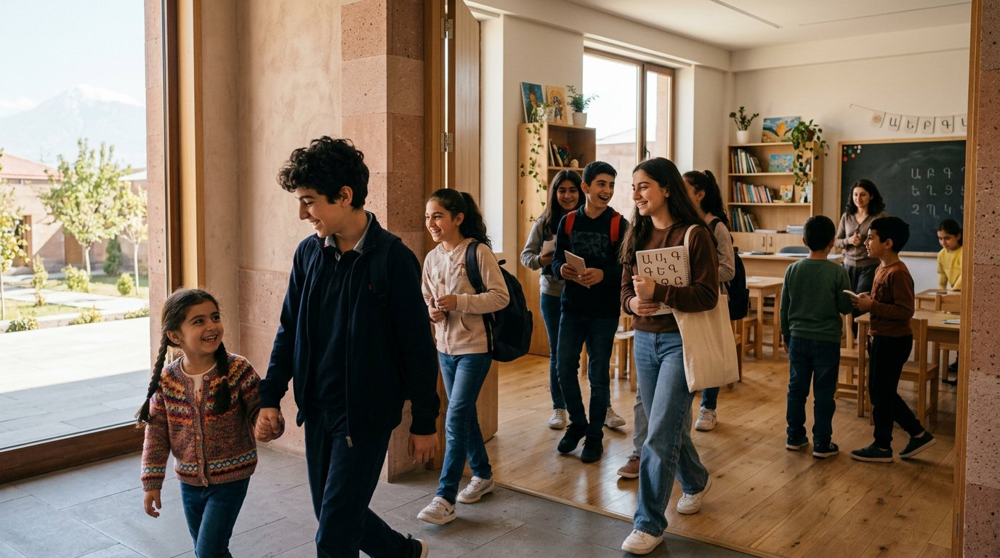
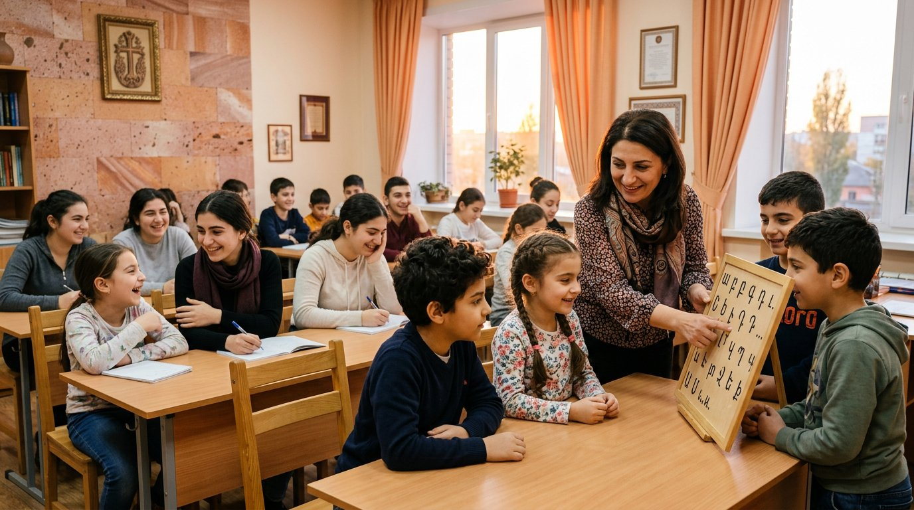

Набор открыт · 2026–2027
Начинается приём учеников на новый учебный год
Приглашаем детей и молодёжь от 5 до 25 лет. Будем рады новым ученикам, которым интересны армянский язык, история и культура.
Записаться по телефону →
Дом языка и традиций в сердце Липецка
120 учеников от 5 до 25 лет изучают армянский язык, историю и культуру.
Здесь сохраняют традиции, находят друзей и поддерживают связь поколений.
События, встречи и культурные проекты — без перегруженного календаря, только главное.
Узнайте о программах, возрастных группах, жизни общины и партнёрах школы.
Будем рады видеть детей и молодёжь от 5 до 25 лет в нашей школе.
Позвоните нам — расскажем о расписании, группах и ближайшем открытом занятии.